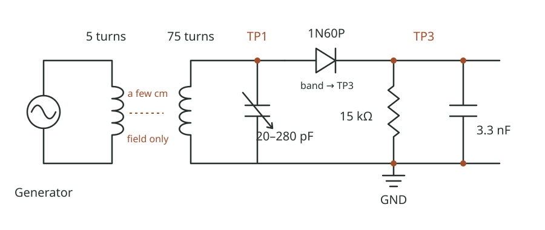
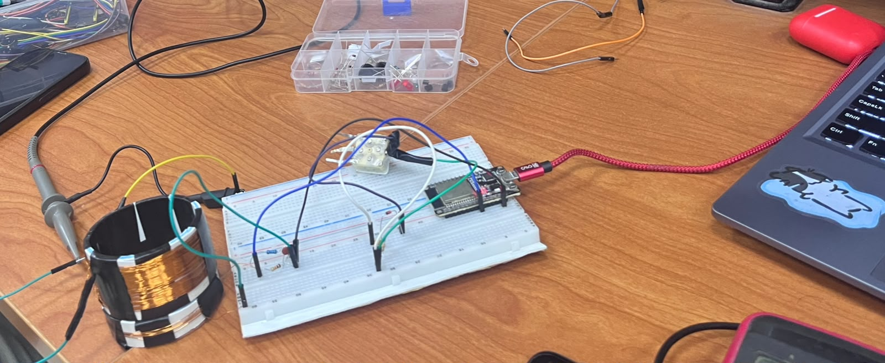
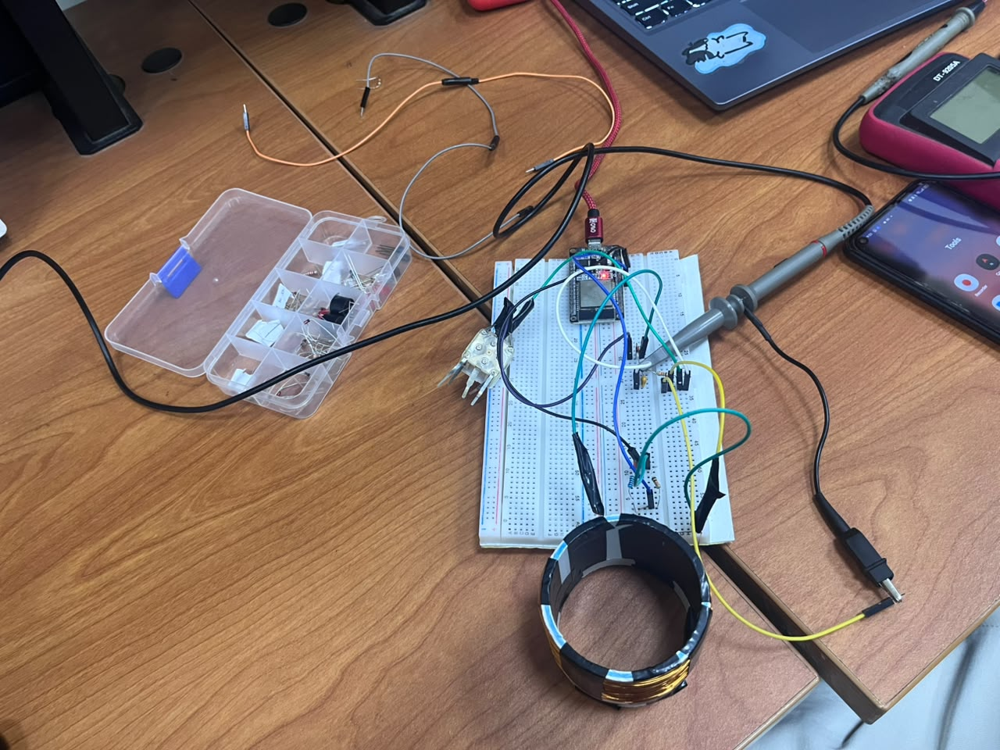
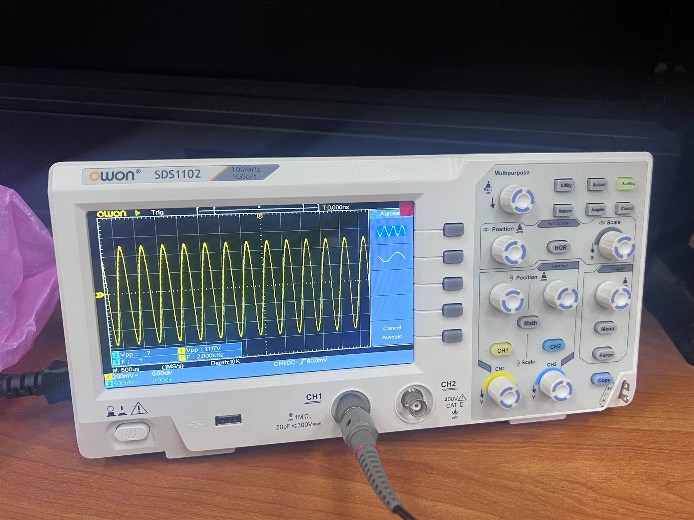
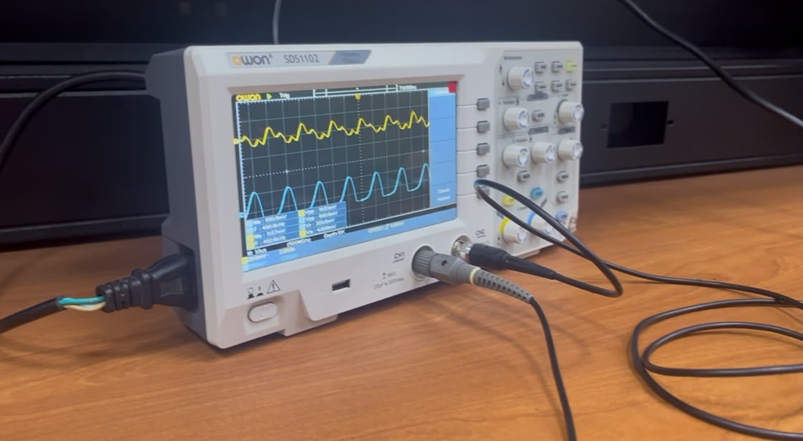
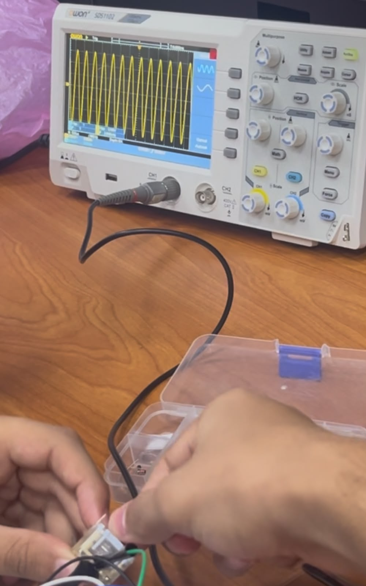
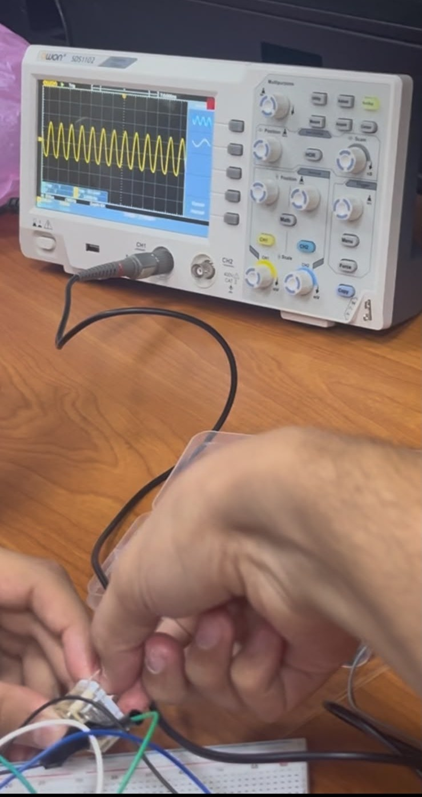

Milestone 01 / Passive radio front end
Tank & detector
01 / WINDINGDrag to orbit · scroll to zoom
Loading assembly…
3D is unavailable in this browser.
The wiring view and complete instructions remain available.
CONNECTION MAPElectrical connections · not to scale
CALCULATED RESPONSETeaching model · not measured
Model equations & assumptions
FIG. 01
Inspect
Reference / M1
The complete circuit
Follow the nodes, not the physical positions of the parts.

- TP1 Radio frequency
- One end of the coil, one AM terminal and the diode anode. Probe here to find resonance.
- TP3 Detected output
- Diode cathode (band), resistor and 3.3 nF capacitor. Measure DC here for a steady sine.
- GND Common return
- The other end of the coil, the other AM terminal and both load returns.
Field notes / M1
Our build record
Measured resonance and detector readings from the bench. The notes below record what did not go to plan; the photographs are the evidence we kept.
01
Build & difficulties
Two unresolved problems: the lab scopes disagreed, and our readings missed the predictions.
Recorded in full below.02
Measured output
Recorded below from the bench.
Resonance and bandwidth (Table 5); TP1 peak and TP3 DC (Table 6).03
Evidence
Six photographs from the build and the scope.
Select any image to open it at full size.Build notes / M1
What gave us trouble
Two observations from the bench. Neither is resolved yet.
-
The scopes disagreed.
The same circuit produced different results on different oscilloscopes in the lab. At TP3, one scope showed a rectified signal while another showed it non-rectified, with no change to the circuit itself.
-
The readings missed the prediction.
Our measured values deviated from the expected results by a non-negligible margin. We do not yet have an explanation for the gap, so we have kept the readings as observed rather than correcting them.
Table 5 · The tank at TP1
| Band’s low end (kHz) | Band’s high end (MHz) | f0 at half travel (kHz) | flow (kHz) | fhigh (kHz) | Q |
|---|---|---|---|---|---|
| 560 | 2.10 | 873 | 856 | 888 | 27.25 |
Driven by the test loop at half capacitor travel.
Table 6 · The detector at f0
| Source setting | TP1’s peak (mV) | TP3, DC (mV) |
|---|---|---|
| 0.05 V | 91 | 0 |
| 0.1 V | 119 | 3 |
| 0.2 V | 215 | 42 |
| 0.3 V | 332 | 111 |
| 0.5 V | 523 | 259 |
| 1 V | 1030 | 710 |
TP1 measured as a peak on the scope; TP3 measured as DC on the multimeter.
Evidence / M1
From the bench
Six photographs from the build and the measurement sessions. Select any image to open it at full size.

The bench, mid-build
The 75-turn coil on its former, the breadboard detector and the USB-powered source board, with the laptop alongside. The long test leads are part of the bench layout.

Overhead check
An overhead view of the same bench, with the probe, meter and phone in frame.

Carrier on the scope
A clean 1.117 Vpp sine at 2.000 kHz on the OWON SDS1102: CH1, 500 mV/div, 500 µs/div. This is an audio-frequency proof of concept, not the 873 kHz tank measurement.

Carrier and detector together
CH1 (yellow) is the noisy carrier; CH2 (blue) is the detector output. At 2 kHz the 50 µs RC is much shorter than the 500 µs period, so the output follows each peak and droops between them.

Probing by hand
Hands on the board during a detector check, with the carrier steady on CH1. Contact and probe pressure are part of the measurement here.

A repeat capture
A second capture of the same check, taken on a phone. The trace is clean in this frame; across the lab’s oscilloscopes, the same circuit did not always look the same.
For the current step